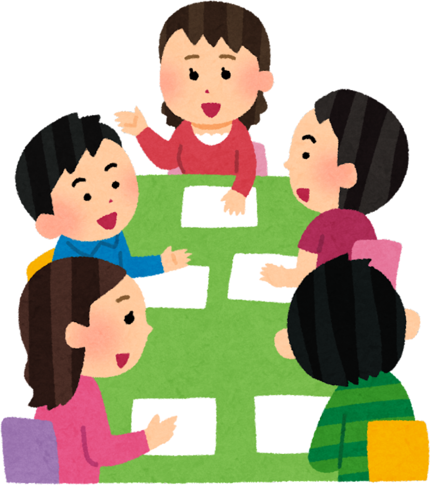

Basándome en mi reflexión sobre la fluidez y la gestión de turnos, así es como esta SdA integra a mis perfiles específicos:
A. LECTOESCRITURA (EL RETO DEL LENGUAJE)
·Niña marroquí, niño pakistaní y protocolo: No se les pide escribir frases. Su misión es la conciencia fonológica: buscarla letra inicial de los productos (ej. la "P" de Pera) y dibujarlos. Usarán etiquetas con pictogramas para asociar imagen-palabra.
·Niña que faltó y niño con protocolo: Trabajarán el reconocimiento global de palabras comunes de la tienda (pan, leche, fruta) mediante juegos de emparejamiento.
B. RAZONAMIENTO MATEMÁTICO (EL MERCADO)
·Niño inquieto (AA.CC.) y niño inteligente: Serán los "Contables". Manejarán precios más complejos (ej. 2€ + 3€) ya ayudarán a organizar el inventario por categorías (lácteos, frutas, limpieza).
·Alumno "Ausente": Su rol será el de "Pesador". Usar una balanza real le obliga a observar números y pesos, una actividad táctil que le mantendrá conectado a la realidad del aula.
C. CONOCIMIENTO DEL MEDIO (LA INVESTIGACIÓN)
·Niño con TEA (G2): La tienda es un entorno altamente estructurado. Tendrá una lista de tareas visual (ej: 1. Ordenar manzanas, 2. Poner precio, 3. Tachar en la lista). Esto le da seguridad. Además, al trabajar con envases reales, se reduce la abstracción.
·Niño sobreestimulado (G4): Será el "Responsable de Calidad". Su función es revisar que todos los productos estén en su sitio y que el ruido en la tienda no sea excesivo. Esto canaliza su necesidad de intervención hacia una norma de convivencia.
Teniendo en cuenta la diversidad presente en el grupo resulta, especialmente, adecuado plantear actividades manipulativas, visuales y basadas en la interacción.
El aprendizaje cooperativo permite que los alumnos trabajen en equipos heterogéneos, donde pueden ayudarse entre ellos, y participar en función de sus posibilidades. De esta forma, el alumnado con mayor dominio de la lectura o del lenguaje puede servir de modelo para otros compañeros que todavía están iniciando estos procesos.
Además, la temática del mercado resulta cercana al alumnado y facilita la participación de todos, ya que incluye actividades diversas como hablar, escuchar, clasificar, manipular objetos o reconocer imágenes y palabras sencillas. Esto permite adaptar las tareas a las características de cada alumno y favorecer la inclusión dentro del grupo.
Por último, el uso de recursos como la pizarra digital y materiales visuales contribuye a mantener la atención del alumnado, y facilita la comprensión de las actividades, especialmente en aquellos alumnos que necesitan más apoyo visual o lingüístico.
En conjunto, el proyecto pretende crear un entorno de aprendizaje participativo en el que el alumnado pueda aprender a través de la interacción, la cooperación y la experiencia directa.
